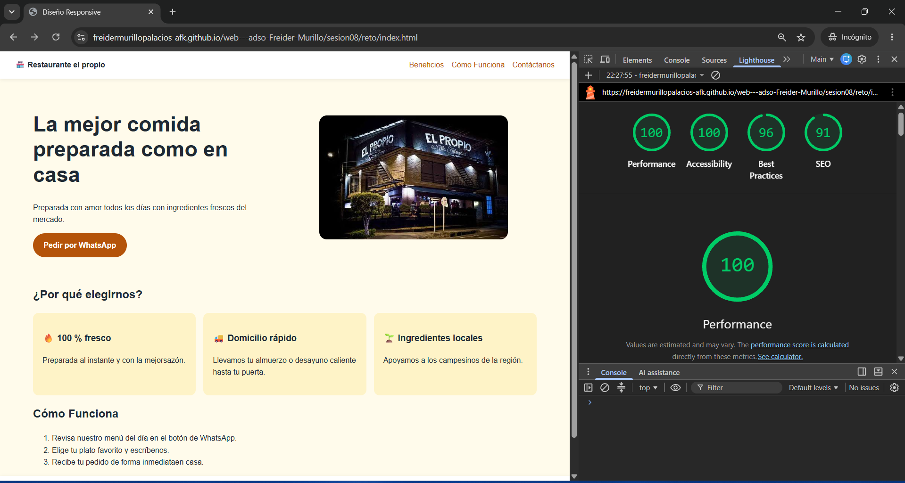
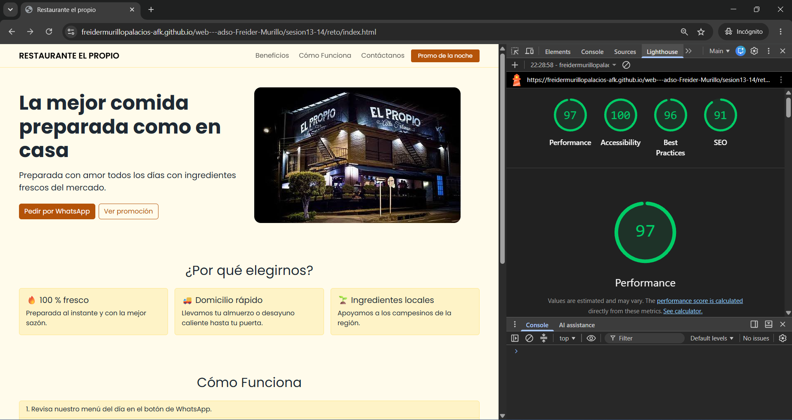

Comparativa: Landing Sesión 8 vs. Sesión 13
Restaurante el propio — CSS propio vs. Bootstrap
1. Resultados de Lighthouse (modo incógnito)

Sesión 8 (CSS propio)
Medición de rendimiento y métricas generales de la versión con CSS propio.

Sesión 13 (Bootstrap)
Medición de rendimiento y métricas generales de la versión rehecha con Bootstrap.
2. Tabla comparativa
| Criterio | Sesión 8 (CSS propio) | Sesión 13 (Bootstrap) |
|---|---|---|
| Puntaje de Rendimiento (Lighthouse) | Puntaje de 100 | Puntaje de 97 |
| Líneas de CSS escritas | 174 líneas propias | 56 líneas de ajustes de marca |
| Tiempo que tomó | Mayor tiempo definiendo rejillas y media queries | Menor tiempo armando estructura y columnas |
| Qué tan única se ve | Identidad visual más libre y personalizada desde cero | Estructura y componentes reconocibles con ajustes de marca |
| Qué tan fácil fue hacerla responsive | Requiere escribir grid/flex y media queries a mano | Más rápido usando clases como col-12 y col-md-6 |
3. Conclusión
¿Usaremos Bootstrap o nuestro propio kit en el proyecto final? En el proyecto final conviene apoyarse en Bootstrap junto con un archivo CSS propio acotado para los colores y ajustes de marca, sin reescribir rejillas ni media queries a mano.
¿Por qué? Porque acelera el armado de columnas, navegación colapsable y componentes listos para distintas pantallas, dejando el CSS propio solo para la identidad visual y los detalles específicos de la marca.